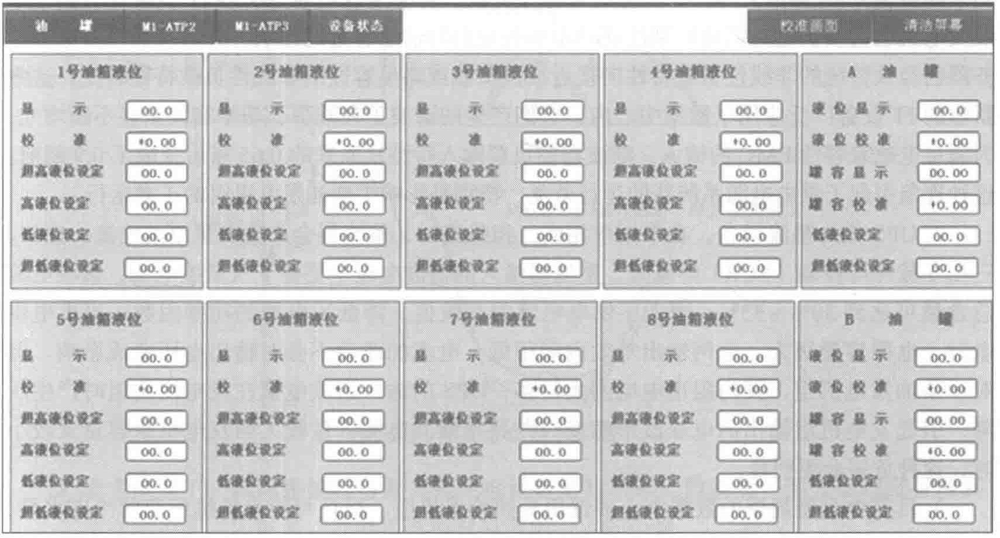

种方式。选择应用时应根据现场环境、使用需求、安装环境、建设成本、可靠性、运营管理等因素进行综合考虑。

由于我国0.4kV的低压配电柜目前最高只能做到6300A以下的应用，所以并联输出的0.4kV柴油发电机总容量不宜过大。如果项目确实需要更大容量的机组，建议采用10kV中压柴油发电机组。一般并机的逻辑控制有三种：
- 第一种是接到此电信号后，所有的机组都同时启动，同时运行。即无论负载多少，并联的N+1台柴油机始终同时在线运行。
- 第二种是接到断电信号后，所有机组同时启动，然后根据检测到的负载大小投入或者切除机组。
- 第三种是接到断电信号后，首先只启动一台机组，然后根据负载大小，由系统决定是否需要启动其他机组并联运行。
选用哪种并机逻辑控制方式还需针对项目的供电架构、用户需求、负载特点进行针对性分析后再确定。
5.4.5 柴油发电机组的负载特性
正确选用备用柴油发电机组容量，不仅要了解柴油发电机组本身，还要了解系统负载特性和设备技术特点给机组容量带来的不同影响，以下几个方面供大家参考：
1. 首先确定柴油发电系统是否是数据中心唯一的第二路电源，如果是，在选型时就要考虑长时间断电需要柴油发电机组长时连续运行的工况。在非线性负载中分为电感性（如感